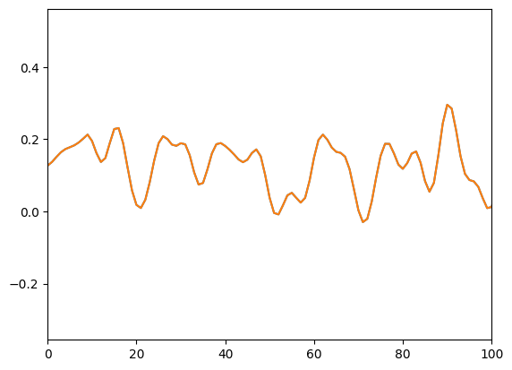

from tsfast.datasets.core import create_dls_test
from tsfast.learner import RNNLearner
from tsfast.prediction import FranSysLearnerInference
Pytorch Modules for Training Models for sequential data
InferenceWrapper
InferenceWrapper (learner:fastai.learner.Learner, device:str|torch.device='cpu')
Initialize self. See help(type(self)) for accurate signature.
| Type | Default | Details | |
|---|---|---|---|
| learner | Learner | The trained fastai Learner object. | |
| device | str | torch.device | cpu | Device for inference (‘cpu’, ‘cuda’). |
dls = create_dls_test().cpu()
lrn = RNNLearner(dls)
model = InferenceWrapper(lrn)model(np.random.randn(100, 1)).shape(100, 1)model(np.random.randn(100)).shape(100, 1)model(np.random.randn(1,100,1)).shape(100, 1)lrn = FranSysLearner(dls.cpu(),10,attach_output=True)
model = InferenceWrapper(lrn)#check output of model equivalent to lrn
y_pred,y_true =lrn.get_preds(ds_idx=-1)from tsfast.data import hdf_extract_sequence#get raw sequence from test set without normalization
test_path=dls[-1].items[0]['path']
u = hdf_extract_sequence(test_path,['u'])
y = hdf_extract_sequence(test_path,['y'])from matplotlib import pyplot as pltplt.plot(y_pred[0])
plt.plot(model(u,y))
plt.xlim(0,100)
model(np.random.randn(100, 1),np.random.randn(100, 1)).shape(100, 1)lrn = FranSysLearner(dls,10,attach_output=False)
model = InferenceWrapper(lrn)lrn = FranSysLearner(dls,10,attach_output=True)
model = InferenceWrapper(lrn)
model(np.random.randn(100, 1),np.random.randn(10, 1)).shape(100, 1)